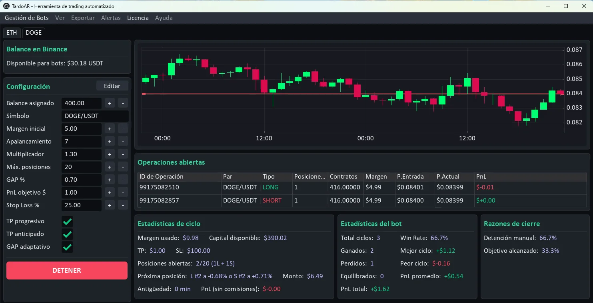
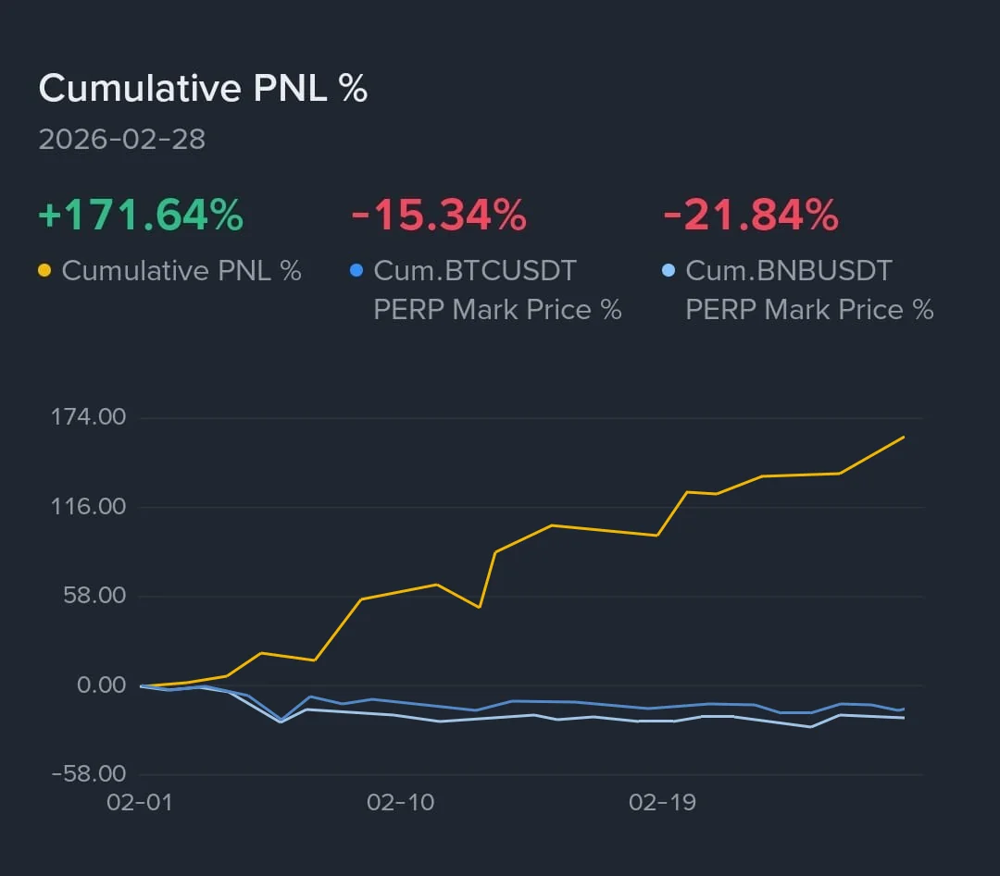
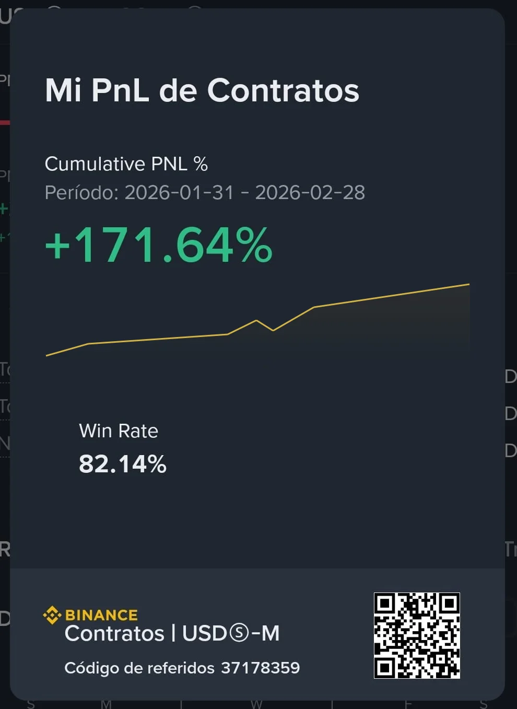
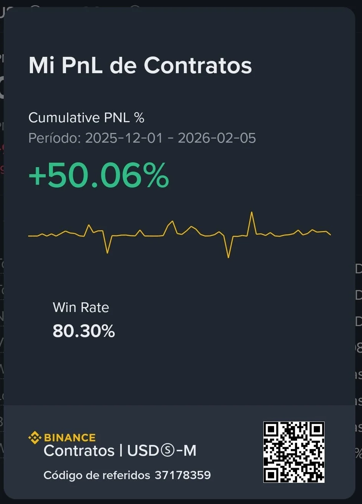
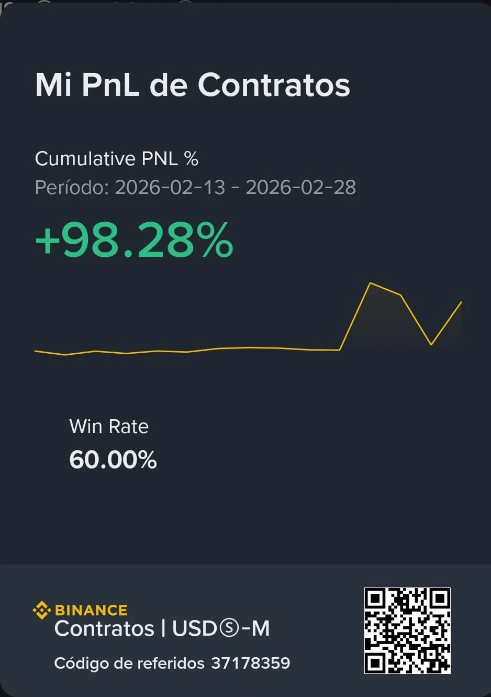
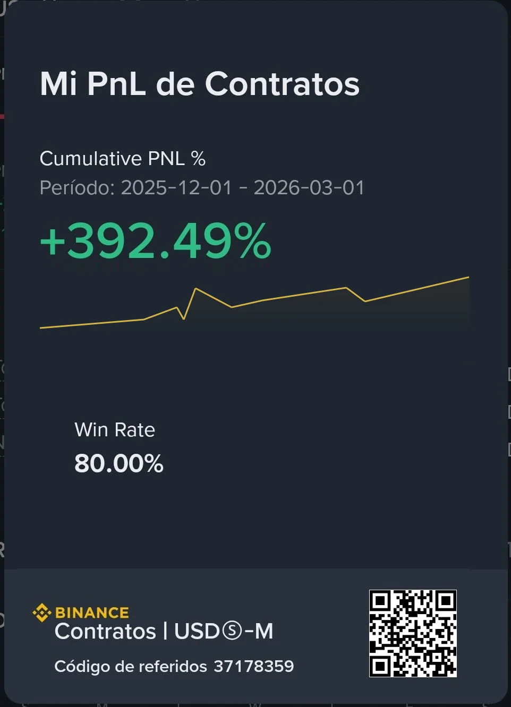
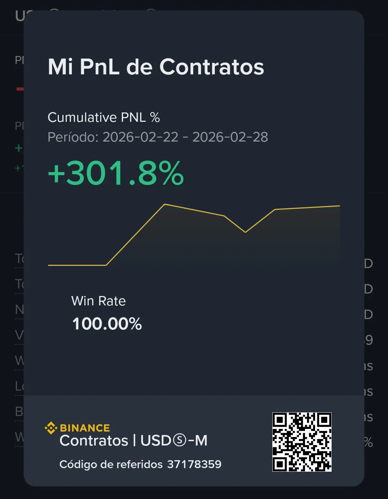
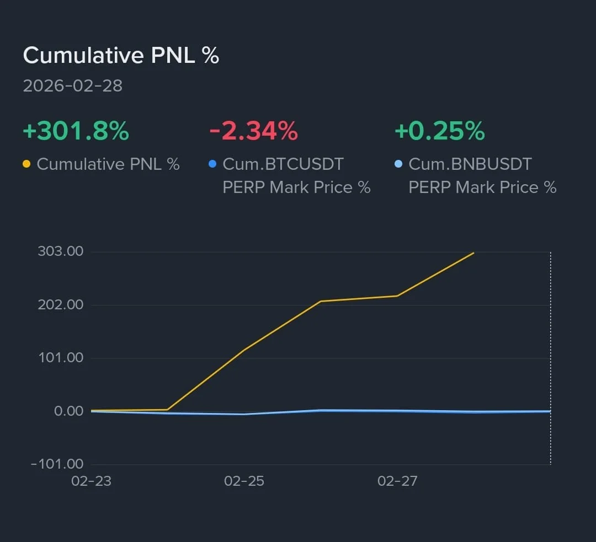
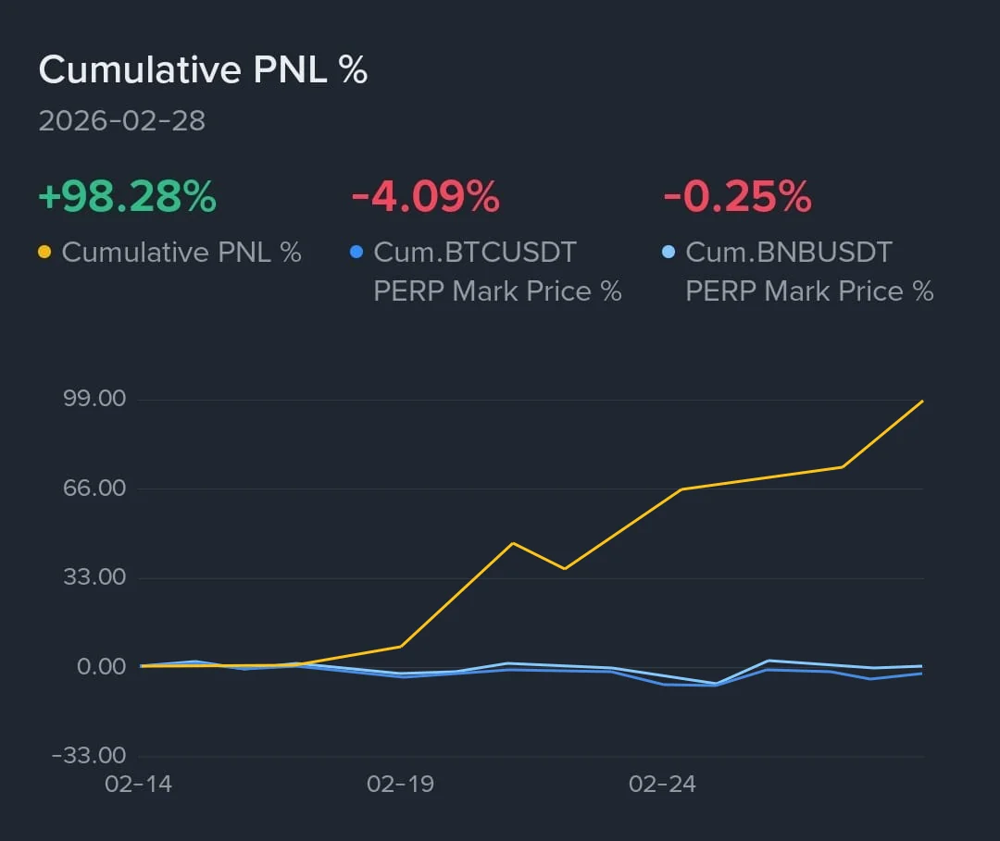

Un poco de historia...
Hola! me llamo Damián, soy Argentino, estoy en el mundo cripto hace varios años ya… Conocí a Bitcoin cuando valía entre 100 y 200 dólares allá por el 2013. En ese momento no era fácil comprarlo, no había exchanges simples ni plataformas intuitivas como hoy en día. Era estudio, prueba y error.
Al principio empecé por entender cómo funcionaba la tecnología blockchain. Solo compraba y vendía BTC a wallets particulares. Vi nacer a la mayoría de los exchanges de hoy, y también vi caer varios grandes con los años…
Conocí muchísimos "Gurus" del ambiente, de distintos países, cada uno con sus métodos, sus análisis, que parecían prometer grandes ganancias. Ah, pero cuando el mercado se ponía en rojo, se borraban todos… porque solo era comprar, guardar, vender más caro y esperar que el precio baje otra vez. Eso llevaba años para ver realmente ganancias, y ni hablar si tenías poco capital (como el común de los traders de mi país).
Después entró el trading a mi vida, nació Binance, aparecieron los Futuros (especular si el precio sube o baja sin tener el activo realmente), era atractivo, "podía ganar para ambos lados", pero también llegaron los golpes.
Viví bull markets eufóricos y bear markets que parecían no terminar nunca. Guerras, crisis mundiales, China apagaba sus granjas de minería, noticias que supuestamente explicaban cada movimiento. Mientras tanto, hacía lo que hace la mayoría: mirar gráficos durante horas en casa o en el móvil, dibujar soportes, resistencias, Fibonacci, todo lo que "aprendía" viendo a los Youtubers de turno… Pero siempre corriendo detrás del precio, analizando el pasado, entrando tarde, saliendo antes. Festejaba un trade y me lamentaba diez…
Y sí, también quemé cuentas. Muchas.
Hasta que entendí algo que cambió todo:
"El mercado es cíclico. Y en temporalidades chicas más todavía. No sube para siempre. No baja para siempre."
Dejé de perseguir el pasado y empecé a trabajar con la estructura matemática del mercado. Con gestión de riesgo real y disciplina, porque para ganar, tenés que aprender a perder, pero perder correctamente… en ese momento año 2021/2022 desarrollé una estrategia de reversión de precio adaptativa que terminó siendo la más rentable de mi vida.
Ahí entendí que el problema no era el mercado.
"Era operar sin una estrategia sostenida en el tiempo."
La diferencia hoy
Esa estrategia ya no depende de emociones, cansancio ni impulsos. La convertí en una herramienta que opera 24/7 aplicando exactamente la misma lógica, con reglas claras y control de riesgo.
No es intuición. No es suerte. Es probabilidad aplicada con disciplina.
Si estás cansado de improvisar, entrar tarde a las operaciones, de perseguir el precio o de depender del "fundamental" de turno…
TARDO es para vos.
Control Total en Tiempo Real

Resultados Reales
Capturas verificadas de cuentas de Binance de los ultimos meses. Click para ampliar.








Precios Transparentes
Elige el tipo de licencia
Escala tus operaciones de trading con infraestructura de alto rendimiento, adaptá tu estrategia a cada criptomoneda.
Basic Mensual
-
1 bot activo -
Panel de control web accesible desde cualquier dispositivo con conexión a internet -
Opera el par que elijas -
Actualizaciones incluidas -
Ideal para comenzar con TARDO y entender sus características.
Premium Mensual
-
3 bots activos simultáneamente -
Opera hasta 3 pares distintos en paralelo -
Panel de control unificado y Panel de control individual web accesible desde cualquier dispositivo -
Mayor capacidad de diversificación -
Actualizaciones incluidas -
Cada bot requiere una API key de Binance distinta
Enterprise Mensual
-
10 bots activos simultáneamente -
Gestión de múltiples pares y estrategias -
Panel de control unificado y Panel de control individual web accesible desde cualquier dispositivo -
Pensado para operadores avanzados -
Máxima capacidad de diversificación -
Actualizaciones incluidas -
Cada bot requiere una API key de Binance distinta
Basic Anual
-
1 bot activo -
Panel de control web accesible desde cualquier dispositivo con conexión a internet -
Opera el par que elijas -
Actualizaciones incluidas -
Ideal para comenzar con TARDO y entender sus características.
Premium Anual
-
3 bots activos simultáneamente -
Opera hasta 3 pares distintos en paralelo -
Panel de control unificado y Panel de control individual web accesible desde cualquier dispositivo -
Mayor capacidad de diversificación -
Actualizaciones incluidas -
Cada bot requiere una API key de Binance distinta
Enterprise Anual
-
10 bots activos simultáneamente -
Gestión de múltiples pares y estrategias -
Panel de control unificado y Panel de control individual web accesible desde cualquier dispositivo -
Pensado para operadores avanzados -
Máxima capacidad de diversificación -
Actualizaciones incluidas -
Cada bot requiere una API key de Binance distinta
Si ya te prometieron riqueza rápida y terminaste empezando de cero… quizás no necesitás más promesas.
Necesitás TARDO.
¿Cómo funciona Tardo en detalle?
Estrategia Dual Inteligente
TARDO trabaja abriendo posiciones en ambos sentidos del mercado para detectar la presión dominante en el corto plazo. No intenta adivinar si el precio va a subir o bajar. Primero interpreta la dirección que el mercado está desarrollando y, una vez identificada, comienza a reforzar únicamente ese lado de forma progresiva. Así construye una estructura pensada para capturar la reversión natural del movimiento. No depende de predicciones. Funciona con lógica matemática y gestión estructurada del riesgo.
Gestión de Riesgo Integrada
Cada ciclo tiene un límite claro de exposición. TARDO sabe cuánto puede arriesgar y cuándo debe cerrar una operación. A medida que el mercado se desarrolla, el sistema ajusta dinámicamente los objetivos de salida para buscar un cierre eficiente del ciclo completo. Si el mercado no ofrece condiciones favorables en un tiempo razonable, TARDO puede cerrar anticipadamente y reorganizar su estructura, priorizando siempre la protección del capital. Primero controla el riesgo. Después busca la rentabilidad.
Panel de Control en Vivo
TARDO cuenta con un panel web claro e intuitivo desde donde podés visualizar posiciones abiertas, rendimiento en tiempo real, balance disponible y estado del ciclo activo. Además, podés acceder y controlar todo desde tu móvil dentro de tu misma red, sin exponer la herramienta ni tu cuenta a accesos externos innecesarios. Esto agrega una capa extra de seguridad tanto para la computadora donde corre el sistema como para tu cuenta de trading. Tenés control total, visibilidad completa y gestión remota dentro de un entorno protegido.
Estrategia Adaptable al Usuario
TARDO no es rígido. La lógica central es la misma, pero la intensidad y el comportamiento pueden adaptarse al perfil de cada operador. Podés elegir un enfoque más conservador o uno más agresivo, manteniendo siempre la estructura matemática del sistema. No cambia la esencia. Se ajusta al estilo de quien lo utiliza.
Continuidad Operativa
Si por algún motivo el sistema se detiene, al volver a iniciarse reconoce automáticamente el estado en el que estaba operando y continúa sin perder el contexto del ciclo activo. No improvisa. No empieza de cero. Sigue exactamente donde había quedado.
Registro y Seguimiento
Cada ciclo queda documentado. Podés revisar cómo operó, cuándo entró, cuándo salió y cuál fue el resultado. Esto permite analizar el desempeño con claridad y tomar decisiones con información real. Nada oculto. Nada improvisado.
¿En qué se diferencia TARDO de los demás?
- ✕ Te prometen libertad financiera rápida y sin riesgo.
- ✕ Te venden la ilusión de que un algoritmo "inteligente" va a hacerte millonario mientras dormís.
- ✕ Usan indicadores básicos (RSI, MACD, EMAs, etc...) disfrazados de inteligencia artificial.
- ✕ Funcionan solo para un tipo de mercado, no se adaptan a los años, y solo dan rentabilidad momentánea. No son constantes.
- ✕ Abren ventanas negras de CMD y no sabés realmente qué están haciendo ni por qué.
- ✕ Operás con esperanza, no con estructura y lógica matemática.
- ✓ No promete magia. Promete estructura.
- ✓ Está diseñado para sobrevivir antes que para impresionar.
- ✓ Detecta la presión real del mercado y actúa con lógica, con estrategia, con matemática, no con emociones.
- ✓ Primero controla el riesgo. Después busca rentabilidad.
- ✓ Enfoque claro en estabilidad y protección del capital.
- ✓ Panel de control completo: ves lo que está pasando en todo momento. No operás a ciegas. Podés intervenir cuando quieras.
- ✓ Creado desde la experiencia real de más de 13 años operando y programando en mercados volátiles.
- ✓ No usa APIs de terceros. Opera 100% con tu API personal de Binance. Tu clave nunca pasa por servidores externos.
¿Qué necesito para empezar?
-
PC o dispositivo con Windows 10/11
Preferentemente Windows 10 u 11 para compatibilidad óptima.
-
Conexión a internet estable 24/7
Necesaria para que TARDO opere de forma continua sin interrupciones.
-
Cuenta en Binance
Si no tenés cuenta hacé clic acá para ver la guía de creación.
-
Futuros de Binance y modo Hedge activados
Ver guía paso a paso acá (tiempo estimado: 2 a 3 minutos).
-
Crear API Key en Binance
Ver guía paso a paso acá (tiempo estimado: 5 a 7 minutos).
-
Capital inicial en USDT en cuenta de Futuros
Mínimo recomendado para iniciar $100. Con $300 podés gestionar el riesgo adecuadamente y aprovechar toda la estrategia al 100%.